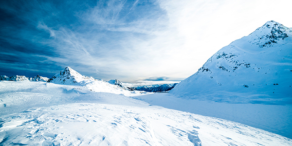

Rugged Ranges
New Zealand has many amazing mountain ranges. Popular skiing areas include Mount Hutt, Coronet Peak and Mount Ruapehu.
The climate in the mountains is often cold during winter with snow and strong winds.
In te reo Māori, mountain is called maunga.